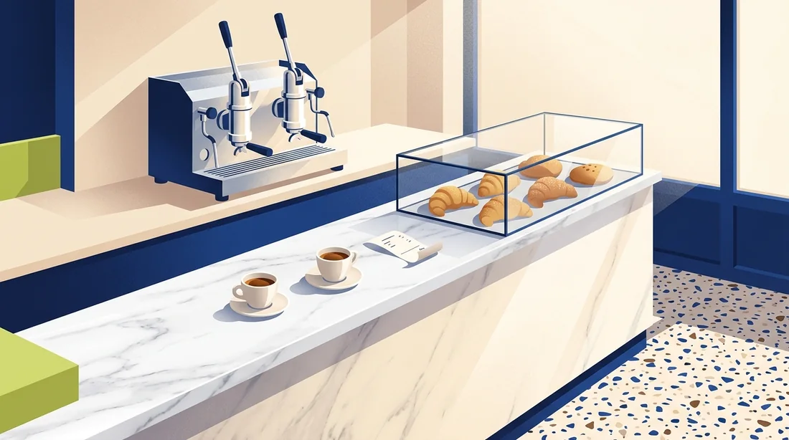

84%
of students study by rereading
Only 11% practise retrieval. Rereading is the strategy learning science rates “low utility”.
Karpicke, Butler & Roediger 2009, Memory · Dunlosky et al. 2013
Tell WorkBuddy when your exam is and where your slides are. The BiliMind crew reads them and last year’s paper, plans the days you have, builds a course whose answers are checked against your slides, and puts your reviews in your calendar.
Practice you run,
not notes to reread.
Quizzes with slide citations, code that runs, flashcards and a review plan that ends on exam day.
22 lesson formats.
Chosen by code.
For example: a Data Structures final on Wednesday, a boba shop's day-one training, Bahasa Melayu for a first month in Malaysia, food hygiene for new crew, an organic chemistry midterm.
What works for exams is testing yourself, spread over days. But setting that up takes hours: questions, flashcards, a schedule, and working out which topics last year’s paper actually weighted. Nobody does that at 11 pm.
84%
of students study by rereading
Only 11% practise retrieval. Rereading is the strategy learning science rates “low utility”.
Karpicke, Butler & Roediger 2009, Memory · Dunlosky et al. 2013
remembered a week later
Same material, same time. The difference is retrieval: answering questions instead of reading again.
Karpicke & Roediger 2008, Science 319
So the crew does the setup.
You give WorkBuddy one sentence. The questions, the cards, the plan weighted by your past paper and the review dates arrive as files you own.
See the crew workThe agents decide what to teach and when. Our code decides how each kind of knowledge must be taught, and checks that it was. Keep scrolling: this is what you watch in WorkBuddy while the crew works.
An illustration of the run’s shape, with data from our sample Data Structures folder. Measured numbers are below.
The skill’s main thread
Decides: reads your sentence, assumes instead of asking, finds the past paper, weights topics by marks, keeps and cuts lessons to fit your days, dispatches the crew.
Code enforces: the plan warns when lessons overrun your minutes; formats come from the archetype table, never from the model.
One per lesson, in parallel
Decides: drafts its lesson, reads the check report, and chooses how to repair: edit the JSON itself or re-draft one block with its own instruction.
Code enforces: mandatory formats, schema, citations that resolve, a cap on multiple choice. At most two repair rounds.
After the Writers
Decides: dumps each exercise to real files, runs the tests, reads the failures and fixes the solution, the starter or a wrong expectation.
Code enforces: tests run in node:vm with a 2-second timeout. Nothing ships unless the reference passes and the starter fails.
In parallel with the Coder
Decides: reads every quiz item next to the slide it cites and rules supported, contradicted or not covered, with a reason.
Code enforces: a quote that isn’t verbatim in the cited slide is refused. Contradicted items never reach you; uncovered ones are labelled.
The outline sorts every lesson into one of 11 kinds of knowledge. A lookup table in our code, not the model, decides which formats that kind must get. A procedure gets steps, a mix-up gets a side-by-side, a phrase gets said out loud.
Everything lands in bilimind-out/ inside your workspace and opens from WorkBuddy’s Results panel. No account, no server, nothing to keep paying for.
A path of lessons whose format follows the kind of knowledge, quizzes with slide citation chips, JavaScript exercises that run in the page, narration, and a “Checked before you saw it” receipts slab.

Assumptions, topic weights from the past paper, what was kept and cut and why, and the day-by-day plan.

Study blocks and spaced reviews dated backwards from the exam, from one FSRS schedule that the course’s “Due today” list also reads.
Flashcards and cloze items, ready to import.
One note per lesson, slide citations as callouts.
What each agent did, every check run, rejections and fixes, cost in dollars and credits, wall time.
Day-one training, without the owner repeating it. A boba shop hires every few weeks, and Southeast Asian frontline turnover runs up to 48% a year. Point WorkBuddy at the SOP folder and the crew builds an onboarding course new hires must pass before their first shift.
“We hire new crew every few weeks. Turn our SOP folder into a day-one course they must pass before their first shift.”
Translated narration is labelled “Translated by AI. Ask a fluent colleague to check.” The hygiene lesson does not replace MOH food-handler training. Turnover: Momentum Works × Lark, 2024.

Boba Shop: Day One · sample SOP, fictional shop
Pass mark 80% before the first shift
Each one was generated by the BiliMind crew’s tools and playbook from a different sentence and a different folder. They run right here in your browser: narration, quizzes, code.
 University · exam in 3 days
University · exam in 3 days
“My Data Structures final is Wednesday 9am. The slides and last year’s paper are in this folder. I have 45 minutes a day. Get me ready.”
Sources: sample lecture decks compiled from Wikipedia (CC BY-SA 4.0) and a sample past paper.
Open the course Small business · onboarding“We hire new crew every few weeks. Turn our SOP folder into a day-one course they must pass before their first shift.”
Sources: a sample SOP for a fictional shop and a one-page summary of the Food Hygiene Regulations 2009.
Open the course Language · first month
Language · first month
“I’m an international student at Taylor’s with zero Malay. Make me a survival course for my first month: mamak, Grab, campus.”
Sources: the Wikivoyage Malay phrasebook (CC BY-SA). A practice companion, not the official BMK syllabus.
Open the courseBiliMind is a WorkBuddy skill: a playbook for the Lead, playbooks for the crew, and one Node script with no dependencies. WorkBuddy runs it with the Node it already bundles.
Download the zip, or clone the repo and use skills/bilimind.
Unzip into your WorkBuddy skills folder. WorkBuddy watches it and lists the skill straight away.
%USERPROFILE%\.workbuddy-ai\skills\bilimind\SKILL.mdContent calls go to DeepSeek directly (or OpenRouter). The key stays on your machine and is never printed.
%USERPROFILE%\.bilimind\config.json → {"provider":"deepseek","keys":{"deepseek":"sk-…"}}Set WorkBuddy’s workspace to the folder with your slides, choose Craft mode, and send one sentence. The course opens in the Preview panel when the crew is done.
My Data Structures final is Wednesday 9am. The slides and last year’s paper are in this folder. I have 45 minutes a day. Get me ready.Cost per course is a few cents of text-model calls plus WorkBuddy credits for the agents. Narration uses free neural voices.
Only what we measured. Every number here comes from the crew’s own logs (REPORT.md) on our Data Structures showcase run. Run of 11 October 2026, 00:30 MYT.
4 US cents of text-model calls per course
DeepSeek direct, read from the ledger.
80 automatic checks passed, of 80
4 repaired by the agents, 0 still flagged.
20 minutes, sentence to finished course
Wall time of one full crew run.
23 quiz answers checked against the slides
3 rejected and rewritten, 0 labelled “Beyond your slides”.
14 code tests run before you saw them
1 exercises failed first and were fixed by the Coder.
24 minutes of narration, free
Read aloud by Edge neural voices, sentence by sentence.
BiliMind existed before Dormathon as a web app (Laravel + Nuxt). We reused its pedagogy, and built everything that runs in WorkBuddy here. The repo starts at the event, so its history is the timestamped record.
The ones a judge would ask first.
A family team at Dormathon 2026. Bilim means knowledge in Uzbek (BEE-lee-mind).